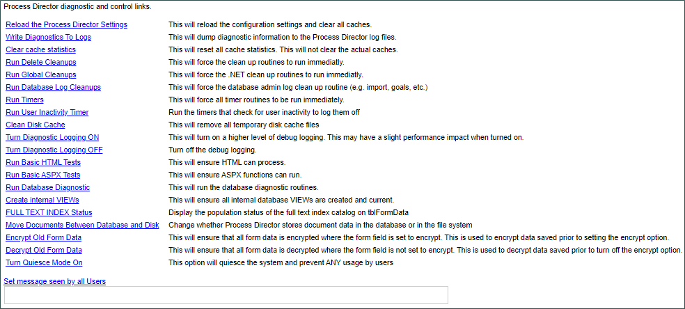

The Server Control page enables you to run various tests and cleanups to ensure that Process Director is running properly. You can also set a message that will be seen by all users when they log into Process Director. You can choose not to send a message by leaving the text field blank and clicking Set message seen by all Users.

Additional troubleshooting options are available on this tab when in Debug Mode.